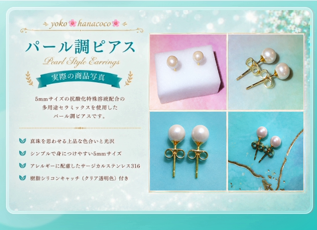
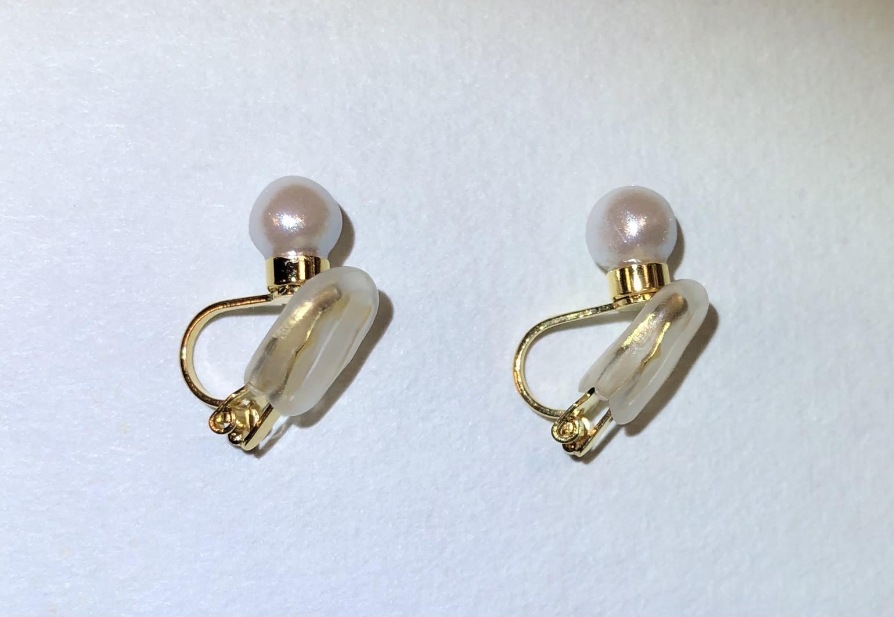
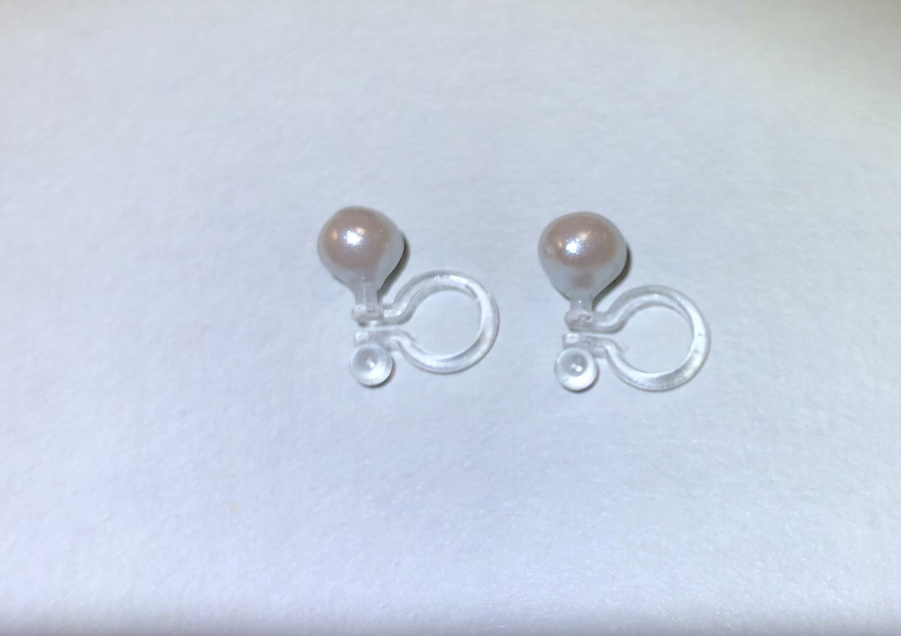
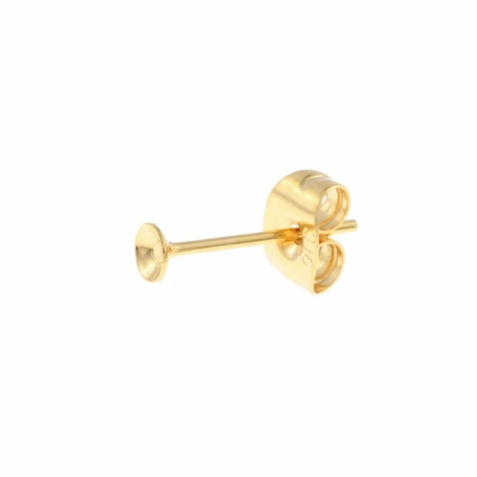
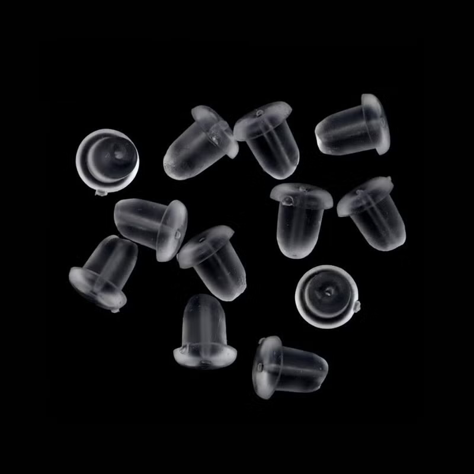
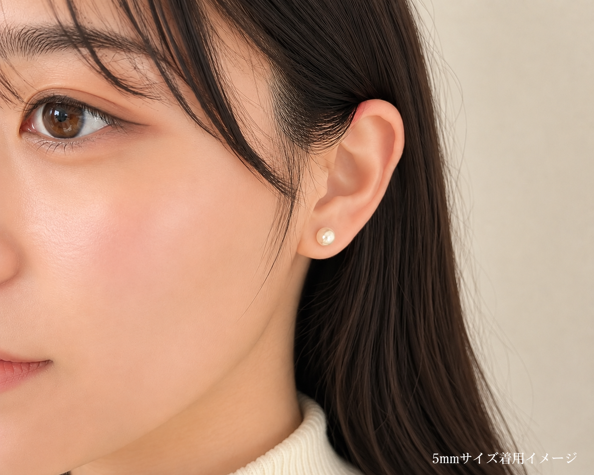

日常になじむサイズ
さりげなく上品な輝きを添える、身につけやすい大きさです。
PEARL STYLE EARRINGS
{{product.material}}を使用し、真珠を思わせる色合いと光沢をまとわせた{{product.name}}です。
{{product.price}}{{product.priceLabel}}

真珠を思わせるやわらかな色合いと上品な光沢をまとわせた、シンプルなハンドメイドピアスです。
大きすぎず、小さすぎない{{product.sizeMm}}mmサイズで、耳元にさりげない華やかさを添えてくれます。
主張しすぎないデザインなので、普段使いはもちろん、お出かけや少し特別な日の装いにも合わせやすく仕上げています。
さりげなく上品な輝きを添える、身につけやすい大きさです。
品質試験を実施した{{product.postMaterial}}を使用しています。
身体に着けていた素材を、毎日の装いに取り入れられるアクセサリーとしてデザインしました。
OUR CONCEPT
貼るから、装うへ。
抗酸化特殊溶液配合のセラミックスは、これまでおへそや身体にテープなどで留めて身につける方法でも活用されてきました。
そんな素材を、もっと自然に、もっと日常的に楽しめるよう、ひとつのオシャレ・ファッションとして{{product.design}}のアクセサリーにデザインしました。
このピアスを通して、抗酸化商品を喜びとともに広めていくこと。身につけるたびに心が弾み、毎日選びたくなるピアスをお届けすること。それが、{{brand.plainName}}の願いです。
イヤリングタイプは、金属アレルギー対応クリップイヤリングとノンホール樹脂ピアスの2種類を、ご相談のうえで受け付けております。


ピアスの素材には、{{product.material}}を使用しています。
一般的なパール素材ではなく、このセラミックスに真珠のような色合いと光沢のある風合いをまとわせることで、上品な{{product.design}}に仕上げています。
素材そのものの特徴を活かしながら、アクセサリーとして身につけやすい表情に仕上げたピアスです。
素材となる多用途セラミックスに配合されている抗酸化特殊溶液は、ASK株式会社の代表取締役会長・会田伸一氏が研究・開発した特殊な溶液です。
ASK株式会社の公式サイトでは、物質の酸化を妨げ、腐敗や雑菌の繁殖を抑えること、フリーラジカル（活性酸素）を消去することなどが説明されています。
土壌・水中・空気中に存在するバクテリアの善玉菌と悪玉菌のバランスを整え、やや善玉菌優性の発酵環境をつくることで、このような作用が起こると説明されています。そのほか、鮮度保持・消臭・害虫忌避など、さまざまな分野での活用が紹介されています。
色合いや光沢、パーツとのバランスを確認しながら、一つひとつ手作業で仕上げています。シンプルだからこそ耳元に自然になじみ、毎日の装いにそっと華やかさを添えられるアクセサリーを目指しました。ハンドメイドならではの風合いをお楽しみください。

日本の分析機関による品質試験を実施した{{product.postMaterial}}を仕入れて使用しています。医療用工具などにも使用される素材で、一般的にアレルギーを起こしにくく、金属アレルギーの原因となりにくい素材として知られています。
ゴールドパーツには、アレルギーを起こしにくいニッケルフリーメッキ（ゴールドメッキ加工）を施しています。
※写真は金具の形状見本です。商品には下記の樹脂シリコンキャッチが付属します。
ピアスには、{{product.catchMaterial}}キャッチも付属します。ピアス本体と一緒にお届けしますので、到着後すぐにお使いいただけます。
※金属アレルギーには個人差があり、すべての方にアレルギー反応が起こらないことを保証するものではありません。

約 {{product.sizeMm}} mm
実際に耳に着けると、さりげなく{{product.design}}の輝きを楽しめるサイズ感です。
※写真は着用イメージです。{{product.material}}（約{{product.sizeMm}}mm）を使用した{{product.design}}ハンドメイドピアスです。
{{product.price}}{{product.priceLabel}}
銀行振込のみ
ご注文確定後、{{order.method}}にてお支払い金額・振込先をご案内いたします。
{{shipping.leadTime}}に発送いたします。
ご注文前に特定商取引法・返品条件を確認する商品についてご確認いただき、購入をご希望の場合は{{order.method}}公式アカウントへお進みください。{{order.method}}が開き、「注文する」と入力された状態になりますので、そのまま送信してください。
{{order.method}}から注文するご注文内容を確認後、お支払い金額・振込先をご案内します。{{shipping.leadTime}}に、丁寧に梱包して発送いたします。購入前に確認したいことがございましたら、こちらからお気軽にお問い合わせください。{{order.method}}が開き、「お問い合わせ」と入力された状態になりますので、そのまま送信してください。
{{order.method}}でお問い合わせ平日は仕事のため、返信までお時間をいただく場合がございます。確認次第、順次返信いたします。